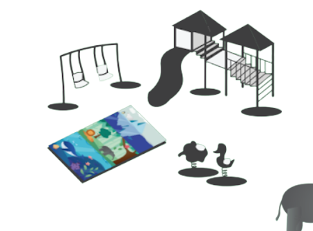
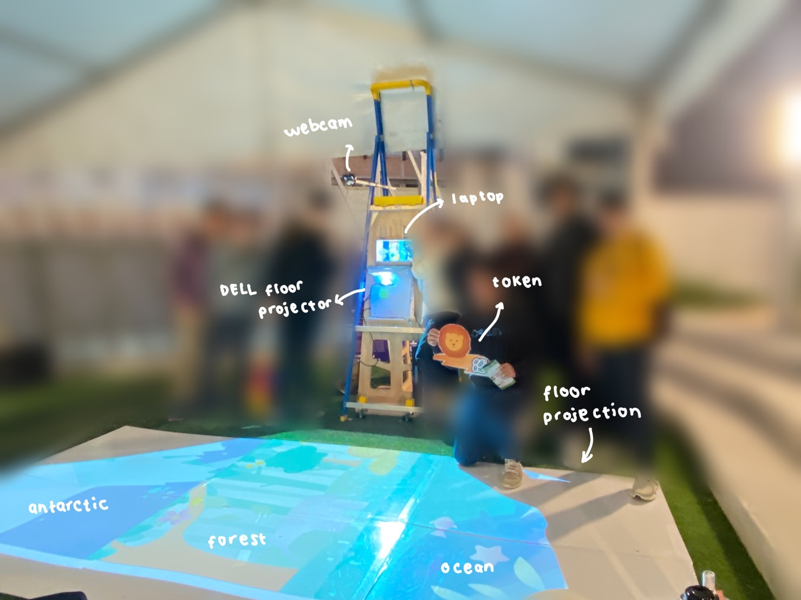
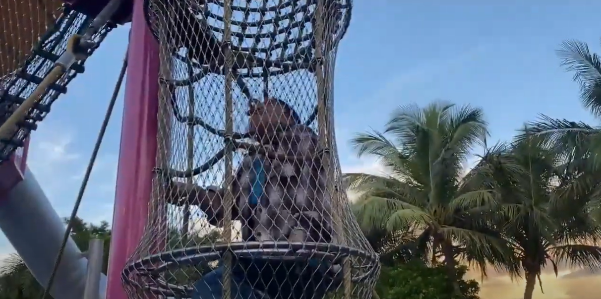
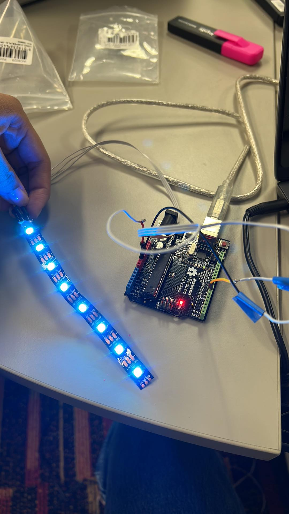

a project which promotes outdoor play through an interactive floor projection
about me
about me
Hello! I'm Azzahra Abraara. You can call me Zahra. Currently, I'm a final year Bachelor of Information Technology student majoring in User Experience Design at The University of Queensland and a Bachelor of Computer Science student at The University of Indonesia. I am interested in UI/UX design and technology. I enjoy designing web or application user interfaces and doing graphic designs. That's all I can say!
see my miro journal! ;)
intended concept
intended concept
Problem Space
Children enjoy playing at playgrounds, but they are not well suited for them. In general, they lack a crucial component: the presence of nature into children's play areas. They also seem to be lacking in outside play time, according to research.
Problem Statement
"Children need more time to play outside and be exposed to nature."
Project Earth-101 (the 'ideal')
Project Earth-101 is an interactive floor projection for children from 5-7 years old to be exposed to nature. This project will be placed in playgrounds so children can explore and play outside more.
The intended form contains a floor projection showing different types of biomes and elements of flora, fauna, and rubbish. Children can play around with the elements by placing the elements in different biomes; the ocean, forest, and antarctic on the floor projection. The elements may have a negative or positive effect on different biomes. For example, a fish belongs to the ocean. However, it does not belong to the forest. The fish will be a negative effect on the forest. While children place the elements on the floor projection, they can also see how the environment can change depending on where the children place the elements. The more children place negative elements on a specific biome, the worse the environment will be. The more children place positive elements on a particular biome, the better the environment will be. The floor texture will change dynamically based on it too. For example, the more the children place good elements in the forest, the more they can feel they dynamically stand on grass and ground. For the ocean, they will feel like they stand on the water; for the antarctic, they will feel like standing on an ice ground. This experience will help the children to be exposed to nature, and through exploration, they will learn about flora and fauna of each biome. They can also learn about what is good and bad for the environment.
Due to its dependency on yet-to-be-developed technology, the whole planned experience of Project Earth-101 is currently unachievable.
Context
this project will be placed in playgrounds
concept storyboard
final product
final product
The Final Product and Experience of Use (the 'actual')
The actual product was exhibited at the Andrew N. Liveris Building on the 2nd of June 2022. Our team was placed in an area for children and outdoor activities.

The actual product was quite close to our intended ideal concept. It consists of a floor projection, a web camera, and tokens with various shapes of flora, fauna, and rubbish. The floor projection shows animations of different types of biomes; the ocean, forest, and antarctic. A playful song also plays on the projection. The tokens use fiducial markers so that the system can differentiate each one of them. The webcam is used to scan the tokens into the system. The webcam is also used to know which tokens are placed on which biomes.

Each biome's negative and positive effects will be shown as a ripple effect. The negative effect will be shown as a red ripple effect, while the positive one will be shown as a green one. The effect will change based on which elements they belong to. For instance, a lion token will appear as a green ripple effect on the forest biome however appear as a red ripple effect on the ocean and antarctic biome. For waste tokens, they appear as red ripple effects since they are unbeneficial for all biomes.
reflection
reflection

Relevance to the Theme
I believe Project Earth-101 suits the studio theme. This year's studio theme was "Everyday Future". Project earth-101 conformed to the studio concept because it was a novel idea to encourage children to engage in outdoor play and exposure to nature. Furthermore, it is novel because it is rare to see a playground with technology such as interactive floor projections. Also, this idea will be placed on playgrounds which we can see anytime, and we know it is an everyday activity. Since it is an innovative idea and uses such a novel technology for the playgrounds, making it "Everyday Future".
Our group theme is "Adaptive Surfaces". Project Earth-101 suits the group theme because it can be seen as our intended concept. The environment and floor texture will dynamically change depending on how many the good or bad elements be in the biome. The surface will be adaptive based on the user input.
Project Outcomes
I am glad that we can implement the final product. Unfortunately, we do not have the time and supported technology to implement our intended concept. For example, we do not have time to implement dynamic change animation in the environment. Also, we do not have the technology yet to change the floor surface into some particular texture dynamically, such as from the regular floor projection into a grass ground. It would be so much fun to play for the children.
However, I think our final product correlates with our ideal concept. For further implementation, if we have more time, the ripple effects can be developed more to be the dynamic change of the environment. Also, the tokens can be replaced by 3d print elements and instead of using fiducial markers, train the elements using object detection (machine learning), or it can be called training a cascade classifier. Furthermore, I think we have already achieved our goal concept. It can be seen from our success criteria. In the exhibition, children, even teenagers and adults, also enjoyed spending their time playing with our prototype. The children also explored and learnt about different types of biomes, their flora, fauna, and waste and how it is good or bad for a particular biome by placing the tokens into different biomes and seeing their ripple effect change.
Overall, I am grateful for this semester's support and encouragement from colleagues, teaching staff, and friends.
my contributions
my contributions
Ideation
When the group theme was assigned, we immediately started to start the ideation process. Each of our theme members started to think of ideas that suit our group theme, "Adaptive Surfaces". We did a brainstorming session and picked "Giant Tetris" as our main idea. For the first presentation, my task was to make a storyboard. Unfortunately, we received bad feedback from the teaching staff. Thus, we did the second iteration of the ideation process. We began to think of ideas that suit our group theme again. Then we drew thumbnails as much as possible. Here, I drew thumbnails as much as possible. We picked the three best ideas and presented them to the teaching staff. However, it did not satisfy them. Therefore, in the next session, we did user research. Then, we presented our ideas to the rest of the members.
After user research, we found a problem space. Then, we started the third and fourth iterations of the ideation process. Here, my team members and I drew thumbnails again. At the end of the session, we presented each of our ideas, picked the best three, and brainstormed to define our main idea, "Biome Tetris."


User Research
Our team did interviews, made probes, and researched age groups, problem space, and observation in the user research stage. My task in this stage was to do an observation on a playground. I did the observation with one of my colleagues, Gaby.

First Prototype
For the first prototype, Gaby and I tried NeoPixels code. I also coded colour tracking because we thought we would use it. Moreover, I did the code for fiducial markers. First, I researched fiducial markers and got a demo code. Then, I defined unique id as bad or good tokens using Processing. I also combined the fiducial markers with the biome background, made by Gaby, and good and bad effects. For the effects, I made green circle effects to represent good tokens while red circle effects to represent bad tokens.
For video proof, click
here
or
here
or
here

I tried neopixels


Second Prototype
For the second prototype, I tried to change the circle effect on each element into ripple effects using Processing. It took me three weeks to do that because there were bugs that my colleagues and I could not fix.
I also did object tracking by training a cascade classifier. Thanks to a tutorial video on youtube, I could try this method. Unfortunately, even if it was successful, it still had a bug. I only tested on one biome element, which was a starfish. I thought the system could not track the element well because I only put ten pictures of the starfish element. If I had more time, I would add more element objects into 1000 pictures so that the code could track the element well. Unfortunately, we ended up not using this method because it was too time-consuming. Training an object took so much time. However, we had 15 elements to train. Therefore, we did not use this method or code.
I furthermore did the biome location coordination code for the position of the biome elements. One of the concepts of our project is to teach whether a particular biome element is good or bad for the biome. For instance, a penguin is good for the antarctic and bad for the ocean and forest biome. Thus, I implemented the code. I defined the location coordinate for each biome. For example, coordinate 1-5 for the antarctic biome, 6-10 for the forest biome, and 11-15 for the ocean biome. For instance, if an element is good for the antarctic. Take the element coordinate. If they are in coordinate 1-5, which is true, they belong to that biome, then show a green ripple effect. However, if they are in coordinate >5, which is false, then show a red ripple effect. I implemented it in every element.
A week before the exhibition, thanks to Jade, she found another ripple effect code that worked. I combined Jade's ripple effect code with the fiducial markers code, Gaby's biome illustration, and biome location coordination code. Later on that week, Xuning and Yamin added falling snow, falling leaves, and ocean waves animations and good and bad backsound to our code. Thank God our prototype was 100% ready for the exhibition.
For video proof, click
here
or
here


design process
design process
Ideation (Week 4-6)
My team and I did idea brainstorming. At first, our main idea was "Giant Tetris". However, we still lacked background and problem space research. Thus, we did an iteration of the ideation again. In this stage, we drew some thumbnails and brainstormed many ideas. However, the background and problem space research were still weak. Then, we decided to research the problem space, background, and target audience and did a playground observation.
After we defined our problem space and target audience, we did some interviews with children and user testing by testing probes. The purpose of the probes was to know what age group already knows different types of biomes and their flora, fauna, and rubbish. We also tested those elements, what kind of things are good or bad for the environment. From our target audience research, user interview, and user testing, we narrowed our age group to 5-6. We also defined our final idea, "Biome Tetris."
Making the First Prototype (Week 7-9)
First, we defined what kind of form we wanted to implement for our idea. After some consideration, we also changed our final idea into "Project Earth-101". Using fiducial markers, we defined our form into floor projections. We also decided to use paper element tokens. My team and I started designing some illustrations for the tokens and the floor projections. We also started to code for the first prototype. We ended up making one biome (the ocean) and its flora and fauna. We also added rubbish tokens.
Making the Final Prototype (Week 10-12)
We continued to design illustrations and code for the final prototype. We coded for the biome animations, biome coordinate divider, and ripple effects and added backsound to it. We ended up making three different biomes; the ocean, forest, and antarctic and their flora and fauna. We also still made rubbish tokens for our idea.
Exhibition Preparation (Week 13)
We combined all of our works. We merged the coding and illustrations for the exhibition. We also practised the camera and floor projection location for exhibition day. We also made sure that all of the code worked correctly. Furthermore, we made project brochures, posters, and team t-shirts for the exhibition.


Prototoype Demonstration
Project Earth-101 Concept Video
References
Bootstrap. (n.d.). Bootstrap. https://getbootstrap.com/docs/4.0/getting-started/introduction/
EventPhotography | Australia’s Leading Event Photographers & Videographers. (2021, March 1). Eventphotography. https://eventphotography.com/
Flaticon. (n.d.-a). Journal Icon - 2708777. https://www.flaticon.com/free-icons/journaling
Flaticon. (n.d.-b). Worldwide Icon - 814513. https://www.flaticon.com/free-icon/worldwide_814513?term=globe&page=1&position=10&page=1&position=10&related_id=814513&origin=search
Freepik. (2020, August 27). Colorful underwater life template Free Vector. https://www.freepik.com/vectors/sea-animals
Lemonad, J. (n.d.). Yeseva One Font. Google Fonts. https://fonts.google.com/specimen/Yeseva+One?query=yeseva+one
McInerney, M., Impallari, P., & Fuenzalida, R. (n.d.). Raleway Font. Google Fonts.
https://fonts.google.com/specimen/Raleway?query=raleway
NeoPixel LEDs: Arduino Basics. (n.d.). Arduino Project Hub. https://create.arduino.cc/projecthub/glowascii/neopixel-leds-arduino-basics-126d1a
OpenCV Face Recognition in Processing. (2021, May 10). YouTube. https://www.youtube.com/watch?v=YX41KXbMf_U
p5.js Example - Mouse Ripple. (2021, January 10).
Happy Coding. https://HappyCoding.io/examples/p5js/input/mouse-ripple
reacTIVision. (n.d.). reacTIVision. http://reactivision.sourceforge.net/
Training a Cascade Classifier -
OpenCV Object Detection in Games #8. (2020, August 22). YouTube. https://www.youtube.com/watch?v=XrCAvs9AePM&t=1147s
Welcome to Processing! (n.d.). Processing. https://processing.org/
Whitney, V. (2021, December 12).
Processing and Markers - Measuring the Great Indoors. Medium. https://medium.com/measuring-the-great-indoors/processing-and-markers-202ef5fdb82b